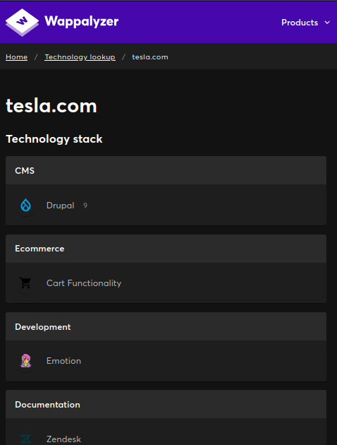

Identifying Website Technologies
In this lecture, TCM presents several tools to analyse which technologies and frameworks have been used to create a website.
The first tool that is presented here is builtwith, an online tool that lists all clues to used technologies for the domain that one has entered.
{kind=link}
The site lists all used technology per category, e.g. in “Analytics and Tracking”, “Widgets”, “Language”, “Mobile”, “Content Delivery Network”, “Content Management System”, “JavaScript Libraries and Functions”, and particularly “Framework”, which is what we are mainly after. This is a great resource, but the sheer amount of information for a big website can be overwhelming.
An alternative service is a browser plugin called wappalizer.com. One can also use their website, but it is necessary to create a user account to get access to a limited amount of free services. TCM uses the Firefox plugin in his video, which looks really good and can be invoked with one click to analyse the current web page.
wappalyzer just uses the content on the website to gather the required information, it does not actively scan anything. It displays the version numbers of the used technologies, which allows to search for vulnerabilities straight away. Even if that does not work right away, the information might still prove to be useful further down the road.
Finally, we can also use a command line tool that is already preinstalled on Kali Linux, whatweb. This tool displays similar information as the other two aforementioned web services, but in a less prettier format. This tool actually scans the target with an adjustable “agression level”.
It is beneficial to scrape the same type of information with different tools since the displayed information might be a bit different, and another tool will hence give us clues that the previous one(s) might not have given yet.
The most extensive information among the three tools described above is apparently available on builtwith.com.